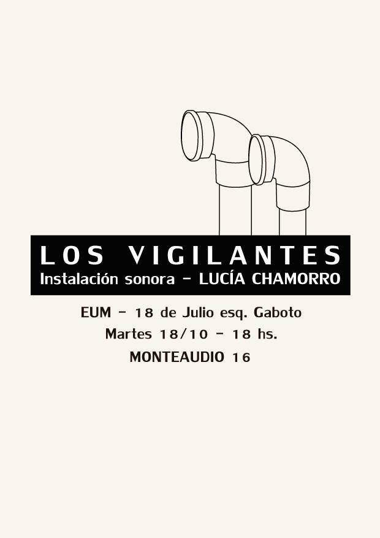

Los vigilantes
Exposición individual de arte sonoro realizada en la Escuela Universitaria de Música (Montevideo, Uruguay), presentada en el marco del Festival Internacional de Arte Sonoro Monteaudio 16.
Consiste en una instalación con varios tubos de pvc con forma de periscopio distribuidos en los pasillos y en el hall del edificio, a través de los cuales se podían escuchar sonidos vinculados a las actividades del lugar: instrumentos musicales, voces reconocibles de profesores, estudiantes y funcionarios, la cafetería, pasos, bicicletas, entre otros.
La pieza fue realizada a partir de grabaciones. Estas grabaciones salían desde los tubos y al acercarse a ellos se generaba la sensación de estar espiando o husmeando en situaciones que podrían estar ocurriendo en ese momento: una clase de historia de la música, otra de contrapunto o una estudiante practicando un fragmento de Syrinx de Debussy con su flauta. De vez en cuando también entraban en la instalación sonidos en tiempo real como el del aula de percusión o el de un trombonista ensayando una escala mayor en el patio.
Se trata de una invitación a escuchar, reflexionar y valorar los sonidos cotidianos modificando de forma leve el contexto y creando focos en favor de una escucha atenta y activa.
